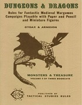

Histoire de D&D
De 1974 à 2014, quarante ans d'histoire de Dungeons & Dragons.
Original D&D (OD&D)
La toute première édition de Dungeons & Dragons est publiée par Tactical Studies Rules (TSR) et sort en 1974 sous la forme de 3 livrets (Men & Magic, Monsters & Treasure, Underworld & Wilderness) écrits par Gary Gygax et Dave Arneson. Trois alignements (loyal, neutre et chaotique), trois classes (guerrier, magicien et clerc) et trois races (nain, elfe et hobbit). Mais on choisit dans ce jeu une classe OU une race (les races sont un peu comme des classes en fait). En 1976 les livrets sortent dans la boîte blanche.

D&D Basic Set (Holmes)
1977, TSR sort une nouvelle version de Dungeons & Dragons, écrite par J. Eric Holmes. Le Basic Set reprend et compile en un seul volume bleu les trois livrets de règles initiaux ainsi qu'un supplément sur Greyhawk paru entre-temps. Cette édition se veut plus grand public que la précédente et permet de jouer du niveau 1 au niveau 3. Au passage, on passe de trois à cinq alignements, et c'est la première boite qui inclut des dés.
Advanced D&D (1ère édition)
1978, Gary Gygax (sans Dave Arneson) lance, toujours chez TSR, Advanced Dungeons & Dragons. Publié après le Basic set, son développement a pourtant été lancé avant que ne sorte ce projet d'une nouvelle édition de D&D basique. À partir de ce moment, le jeu Dungeons & Dragons sera divisé en deux branches. La branche D&D classique, issue du Basic Set, et la branche Advanced D&D. Chacune évoluera de manière indépendante.
Le Monster Manual (350 monstres) était déjà sorti en décembre 1977, mais le Player's Handbook ne sort lui qu'en juin 1978 et le Dungeon Master's Guide en août 1979. Les règles d'AD&D sont mieux organisées (Joueurs/Maîtres/Monstres en comparaison des 3 livrets initiaux de D&D) et inclues tellement de nouveautés qu'on peut réellement parler d'un nouveau jeu. Les alignements passent à neuf et les classes d'assassin, druide, moine, paladin et voleur, qui étaient sorties dans des suppléments pour D&D, sont maintenant intégrées aux règles de base (core rules). De nouvelles classes apparaissent aussi comme le barde, l'illusionniste et le ranger. Enfin, les concepts de classes et races sont maintenant séparés, on choisit une classe ET une race.
D&D Basic Set et Expert Set (Moldway, B/X)
1981, le Basic Set est ré-écrit par Tom Moldvay et une suite sort également, l'Expert Set, écrit par David Cook, qui permet de jouer du niveau 4 au niveau 14. Si la boîte des règles expertes est de couleur bleu, celle des règles basiques passe au rouge. En 1983 sort la première traduction officielle de D&D, et c'est en français !
D&D Basic Set et compagnie (Mentzer, BECMI)
À partir de 1983, Franck Mentzer reprend le Basic Set et l'Expert Set. Puis régulièrement Mentzer ajoute de nouveaux suppléments à cette branche de D&D : le Companion Set (1984) pour jouer du niveau 15 au niveau 25, le Master Set (1985) pour jouer du niveau 26 au niveau 36, et l'Immortals Set (1986) pour jouer au delà du niveau 36.
On peut de manière rapide considérer que la branche D&D classique se termine en 1991 avec la sortie du Rules Cyclopedia qui compile et revisite les versions antérieures pour jouer du niveau 1 au niveau 36.
")
Advanced D&D (2ème édition)
En 1989 sort la deuxième édition d'AD&D, 11 ans après la première. Principalement écrit par David Cook, TSR essaye d'ouvrir le jeu à un public plus large et supprime certains composants qui ont participé à faire une mauvaise publicité au jeu. Exit donc les diables et les démons dans AD&D 2 (qui seront toutefois ré-introduits plus tard mais sous les noms de Tanar'ri et Baatezu). De même, la classe d'assassin et la race de demi-orc passent à la trappe.
D&D (3ème édition)
En juin 1997, TSR est racheté par Wizards of the Coast, éditeur à succès du jeu de carte Magic: The Gathering, lui-même reprit par Hasbro en 1999. Durant la Gen Con de 1999 justement, le nouveau propriétaire de la marque annonce le développement d'une nouvelle édition de Dungeons & Dragons, et lors de la Gen Con suivante, en aôut 2000, après plus d'un an de développement, Wizards of the Coast sort la troisième édition de D&D, soit encore une fois 11 ans après la précédente. Le Dungeon Master's Guide sortira en septembre et le Monster Manual en octobre. Même si le terme Advanced ne figure plus sur les livres, cette 3ème édition est toutefois clairement tirée de la branche AD&D. La mécanique est revue en profondeur par les trois principaux auteurs qui sont Monte Cook, Jonathan Tweet et Skip Williams, et donne naissance au système d20 (open source). Le système est beaucoup plus cohérent et unifié, avec pratiquement toutes les actions résolues avec un seul dé à 20 faces, et de nombreuses nouvelles options, de combat en particulier, font leur entrée dans les règles de base.
En juin 2003 sort l'édition 3.5, qui corrige plusieurs erreurs de conception de la version 3.

D&D (4ème édition)
En juin 2008, soit 8 ans après la sortie de D&D 3 (mais seulement 5 ans après celle de D&D 3.5, ce qui fait grincer les dents de pas mal de joueurs qui ont investi dans cette dernière édition), sortent, le même jour, pour la première fois dans l'histoire de Dungeons & Dragons, les trois livres du triptyque de la quatrième édition de D&D : le Player's Handbook, le Monster Manual et le Dungeon Master's Guide. Les auteurs sont Rob Heinsoo, Andy Collins et James Wyatt. Cette nouvelle version avait été annoncée en août 2007 durant la Gen Con. Les changements sont, une nouvelle fois, conséquents par rapport à l'édition précédente. Les alignements repassent à 5, apparition des pouvoirs, nouvelles classes de base (le warlock et le warlord), nouvelle race d'elfe (les éladrins), refonte du système de soins, disparition des points de compétence, et j'en passe.
D&D (5ème édition)
Our mission is to ensure that D&D enters its next 40 years as a vibrant, growing, and exciting game. We want a game that is as simple or complex as you please, its action focused on combat, intrigue, and exploration as you desire. We want a game that is unmistakably D&D.
- Wizards of the Coast
Annoncé le 9 janvier 2012, le Player's Handbook de la cinquième édition de D&D sort en août 2014, l'année du quarantième anniversaire de Dungeons & Dragons. Le Monster Manual est publié en septembre et le Dungeon Master's Guide en décembre. Les leaders de l'équipe de développement sont Mike Mearls, Rodney Thompson et Jeremy Crawford. D&D 4 n'aura vécu que 6 ans.
C'est sur cette dernière version du jeu qu'Tapouweb se focalise.

Par blueace